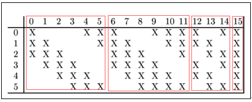
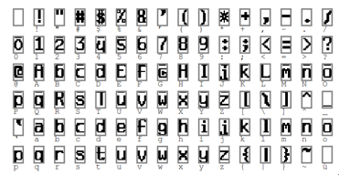

LeNet-5
简介
Gradient-Based Learning Applied to Document Recoginition 论文介绍了 LeNet-5
，用于对于文档内容的识别。可以看作是后续 AlexNet 的前身。
论文介绍了基于卷积神经网络 LeNet-5 为主要识别网络，然后构建 Graph
Transofrmmer Networks 用来将 LetNet-5 的识别结果结合在一起，最终获得整个文
档的识别结果。
文章探讨了训练集和测试集的损失函数的差值，可以用来度量过拟合程度： $$ E_{test} - E_{train} = k(h/P)^{\alpha} $$ 其中，P 为训练样本集数量，h 为对应的机器学习模型的表达能力， \(\alpha\) 为 [0.5,1.0] 之间的系数，k 为常量。可知，随着样本数量增大，差值变小；随着模型表达 能力增大， \(E_{train}\) 会变小，差值变大。最小化结构化风险的方法是最小化 \(E_{train}+\beta H(W)\) ， \(H(W)\) 为正则化函数。最小化正则化函数，主要是用来控 制模型表达能力，从而实现最小化训练损失的同时，控制训练损失和测试损失之间的差值。
LeNet-5

图1 LeNet-5 architecture
LeNet-5 的网络结构如上图所示，整个网络有 7 层，主要由 2 层卷积层 + 2 层采样
层 + 3 层全链接层组成。
网络中，卷积层标记为 Cx，采样层标记为 Sx，全链接层标记为 Fx，其中 x 为网络的网络 层的索引。所以整个网络可以标记为： INPUT -> C1 -> S2 -> C3 -> S4 -> C5 -> F6 -> OUTPUT
输入层
训练集中最大字符大小为 [20,20]，然后在 [28,28] 的图像中间。针对输入，将图像以 背景色填充到 [32,32]，保证字符的所有像素都在最后一层卷积层的感受野中间，即 C3 卷积层的感受野中心点在原图中间 [20,20] 区域内。
输入的像素归一化处理，背景色设置为 -0.1，前景设置为 1.175，从而保证整个训练集 中的像素变成均值为 0，标准方法为 1，实现训练加速。
C1 卷积层
-
输入 - [32,32]原始图像
-
卷积核 - 6@[5,5] 6 个尺度为[5,5]的卷积核
-
步长 - 1
-
填充 - 0
-
激活函数 - sigmoid 类似的激活函数
-
输出 - [28,28,6]，输出计算公式：(input_size-kernel_size+2*pad)/stride+1
-
参数 - 6 * ((5 * 5) + 1) = 156，每个卷积核参数为 5*5 的卷积核权重，加上一 个偏置，然后将所得送到激活函数中，计算输出的激活值。
-
连接数 - 6 * (28 * 28) * ((5 * 5) + 1) = 122304，输出层总共有 6*28*28 个神 经元，每个神经元与输入的 5*5 个神经元，加上一个偏置，总共 26 个神经元 链接。
S2 均值采样层
-
输入 - [28,28,6]
-
采样尺度 - [2,2]
-
步长 - 2，采样区域不重叠
-
激活函数 - sigmoid 类似的激活函数
-
输出 - [14,14,6]，只在单层特征图的采样区域范围内采样。
-
执行过程 - 将[2,2]区域内的神经元输入加和，然后乘以一个可训练的系数，然后 加上偏置，然后送到激活函数，计算最后的激活值。
-
参数 - 6 * 2 = 12，每层特征图共用一个系数和一个偏置。
-
链接数 - 6 * (14 * 14) * (2*2 + 1) = 5880
C3 卷积层
卷积层常规的卷积操作是在输入的深度维度上为全部链接进行卷积操作，而 LeNet-5
的第三层卷积层 C3 采取不同的卷积策略，如图所示：

图2 C3 卷积层中 16 个卷积核在深度维度的链接规则
采取该种卷积策略的原因：减少模型训练参数，从而保证训练损失值和测试损失值一致； 打破模型的对称性，从而使得不同的特征图能够跟不不同的输入学习到不同的特征。设 计的策略为前 6 个卷积核接受三个连续的特征图，6 个卷积核接受 4 个连续的特征图，3 个 卷积核接受 4 个不连续的特征图，1 个接受 6 个特征图。
-
输入 - [14,14, 6]
-
卷积核 - 16@[5,5]，16 个尺度为[5,5]的卷积核，特征图上的链接策略如上图所 示。
-
步长 - 1
-
填充 - 0
-
激活函数 - sigmoid 类似的激活函数
-
输出 - [10,10,16]
-
参数 - 6 * (3 * 5 * 5 + 1) + 6 * (4 * 5 * 5 + 1) + 3 * (4 * 5 * 5 + 1) + 1 * (6 * 5 * 5 + 1) = 1516
-
连接数 - 10 * 10 * (1516) = 151600
S4 均值采样层
类似 S2 的均值采样层。
-
输入 - [10,10,16]
-
采样尺寸 - [2,2]
-
步长 - 2
-
激活函数 - sigmoid 类似的激活函数
-
输出 - [5,5,16]
-
参数 - 16 * 2 = 32，每个特征层都有两个参数(1 个乘积系数+1 个偏置)
-
链接数 - 5 * 5 * 16 * 5 = 2000
C5 卷积层
卷积层为常规的卷积层，在深度上为全通道链接。
-
输入 - [5,5,16]
-
卷积核 - 120@[5,5]
-
步长 - 1
-
填充 - 0
-
激活函数 - sigmoid 类似的激活函数
-
输入 - [1,1,120]，该层可以看作是全链接层，但是由于使用的卷积层，使得该层 对于图像的大小不敏感，即图像变大了之后，输出结果变大一些，类似于在 原图上做了[32,32]输入的滑窗，然后进行计算。
-
参数 - (1 * 1) * (120 * (5 * 5 * 16 + 1)) = 48120
-
连接数 - 48120
F6 全链接层
F6 全链接层具有 84 个神经元。
-
输入 - [1,1,120]
-
神经元数量 - 84
-
激活函数 - sigmoid 类似的激活函数
-
参数 - 84 * (120 + 1) = 10164
-
连接数 - 10164
-
输出 - [1,84]
和常规的神经网络一致，全链接层中的神经元计算输入的神经元和权值向量进行矩阵点 乘，然后加上偏置，记作 \(a_{i}\) 对于神经元 i。然后经过 sigmoid 类似的函数计算， 获得对应的激活值，记作 \(x_{i}\) ： $$ x_{i} =\mathit{f}(a_{i}) $$
激活函数一般可以看作如下： $$ \mathit{f}(a) = Atanh(Sa) $$
\(A\) 控制着函数的振幅， \(S\) 控制着函数的 S 型斜率。
输出层
最后的输出层为欧几里德颈向函数(Euclidean Radial Basis Function units)，输出 对应着分类类别。RBF 的计算公式如下： $$ \mathit{y}_{i} = \sum_{j}(\mathit{x}_{j}-\mathit{w}_{ij})^2 $$
即为输入的向量 \(\mathit{x}_{j}\) 和参数向量 \(\mathit{w}_{ij}\) 的欧几里德距离。 在概率角度，可以看作是全链接层 F6 未归一化的高斯分布概率的负对数似然 (log-likelihood)。
参数向量 \(\mathit{w}\) 是人工选择和设置的，值在[-1,+1]之间。对应的是 84 个不同字 符在[7,12]的位图上的对应图像，如下图所示：

图3 RBF
采取这种输出的编码方式的原因在于：首先，在识别字符的时候，有很多字符的图像较为相似。 例如，数字 1、小写字符 l、方括号等。输出的结果应该也接近。虽然对于单个字符的 数别没有独热编码效果好(one-hot)，但是对于多字符识别，这种编码跟着一个语言模 型进行后处理效果要好于独热编码方式；其次，独热编码在分类目标较多的时候效果较 差，因为独热编码的时候大部分输出应该都为 0，但是在输出层的激活函数为 sigmoid 函 数时候不容易使得大部分输出为 0。再次，RBF 函数较容易实现拒绝识别。
RBF 的值在[-1,+1]之间，可以保证 sigmoid 类似的函数在振幅大于 1 的时候，使得不会出 现饱和状态。
Loss 函数
$$ E(W) = \frac{1}{P}\sum_{p=1}^{P}{y_{D^p}(Z^{p},W)} $$
\(y_{D^p}\) 为第 Dp 的 RBF 单元输出，为样本 \(Z^{p}\) 对应的分类。
上述的损失函数具有 2 个方面不足：
- 如果 RBF 层的参数向量变成可以学习的参数向量，那么只需要 RBF 的参数向量都想等， 然后 FC6 的输出状态保持和 RBF 的参数向量相等，那么不管输入是什么，都可以保 证上述的损失函数变成 0。所以需要保证 RBF 参数向量不变，从而规避上述问题。
- 损失函数只考虑正确类别的，没有引入竞争。即使得正确的类别的 RBF 距离变小，其他
类别的 RBF 距离变大。可以对错误类别也引入惩罚项，使得不正确的 RBF 距离增大。
\begin{equation}
E(W) =
\frac{1}{P}\sum_{p=1}^{P}(y_{D^p}(Z^{p},W)+log(e^{-constant}+\sum_{i}e^{-y_{i}(Z^p,W)}))
\end{equation}
第二项为错误分类的惩罚项。
网络结构
所有的输入和输出维度为[N,H,W,C]，N 为样本数量，H 为高，W 为宽，C 为通道数。
| 网络层 | 输入 | 输出 | 感受野 | 通道数量 | 步长 stride | 填充 padding | 激活函数 | 参数数量 | 连接数 |
|---|---|---|---|---|---|---|---|---|---|
| 卷积层 C1 | [32,32] | [28,28,6] | [5,5] | 6 | 1 | 0 | 156 | 122304 | |
| 采样层 S2 | [28,28,6] | [14,14,6] | [2,2] | 6 | 2 | 0 | sigmoid | 12 | 5880 |
| 卷积层 C3 | [14,14,6] | [10,10,16] | [5,5] | 16 | 1 | 0 | 1516 | 151600 | |
| 采样层 S4 | [10,10,16] | [5,5,16] | [2,2] | 16 | 2 | 0 | sigmoid | 32 | 2000 |
| 卷积层 C5 | [5,5,16] | [1,1,120] | [5,5] | 120 | 1 | 0 | 48120 | 48120 | |
| 全链接层 F6 | [1,1,120] | [84,] | 10164 | 10164 | |||||
| 输出层 | [84,] | [10,] | 840 | ||||||
| 统计 | 60000 | 340908 |